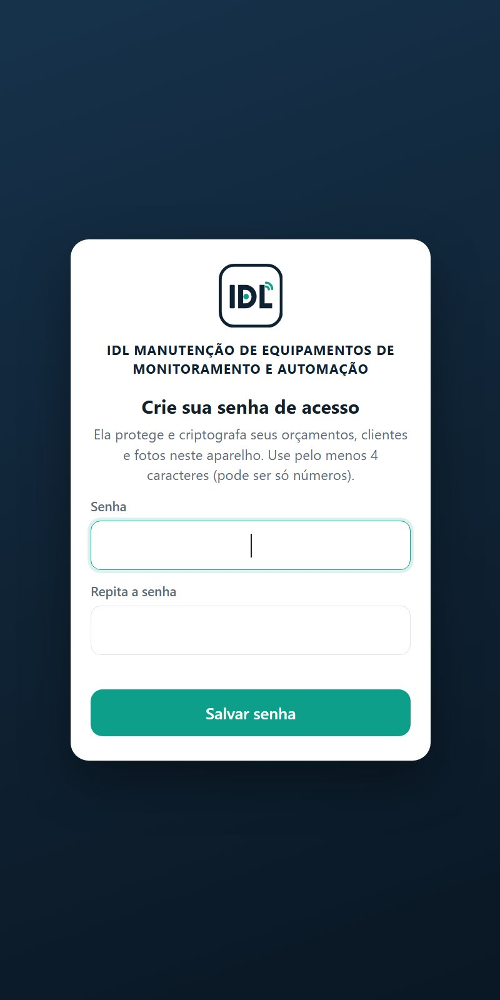
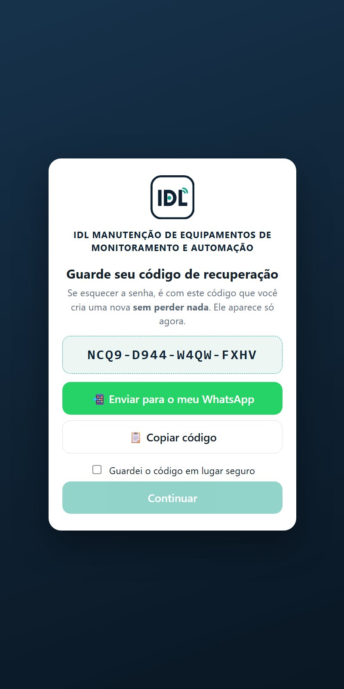
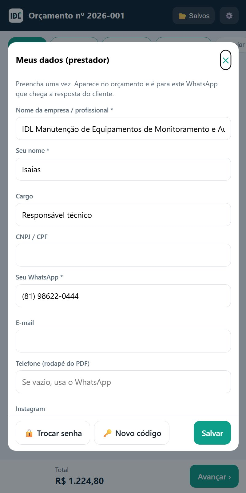
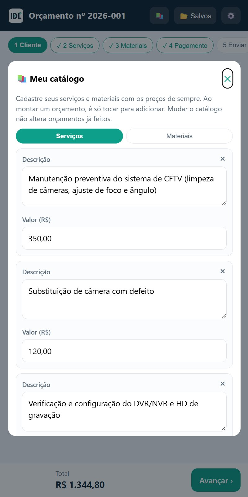
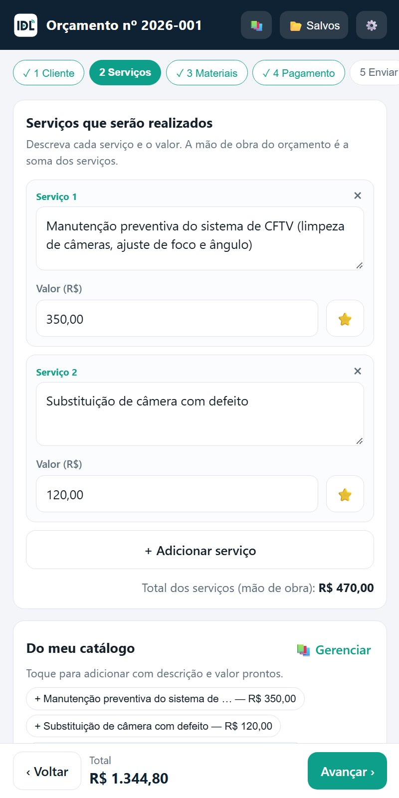
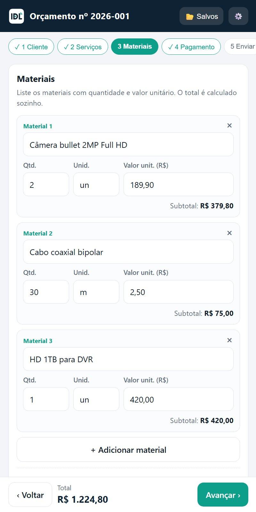
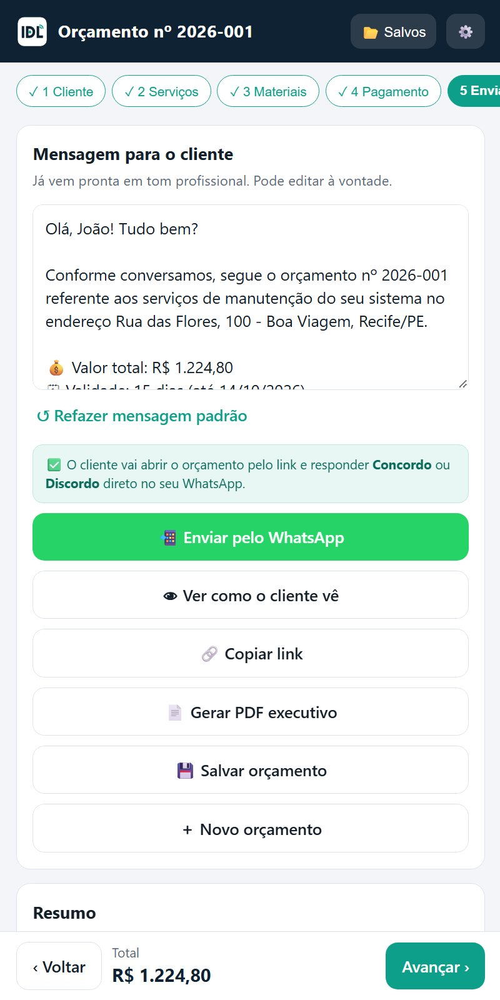
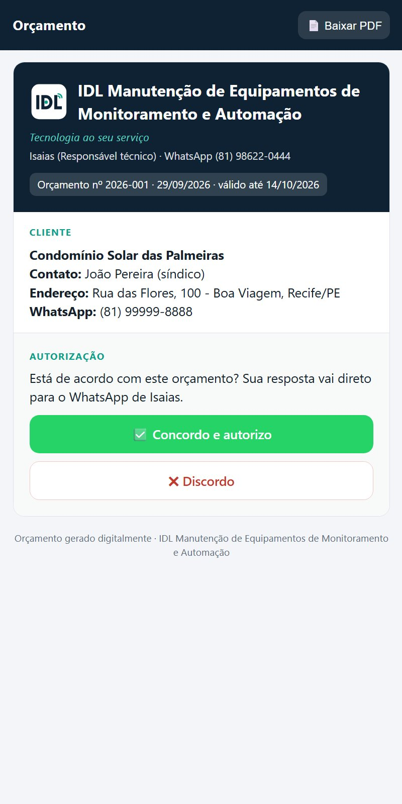
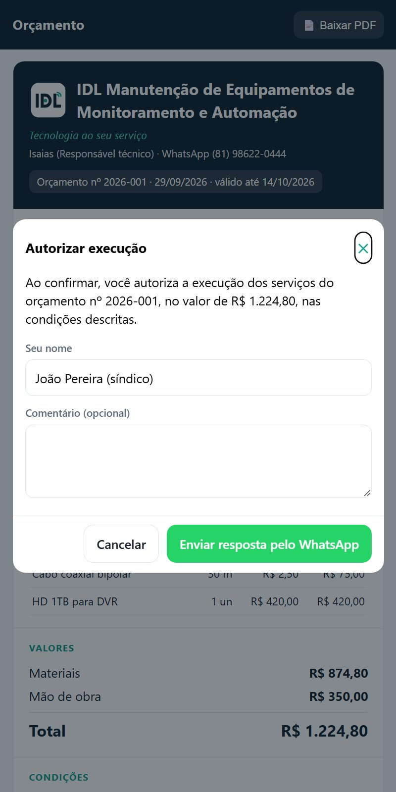
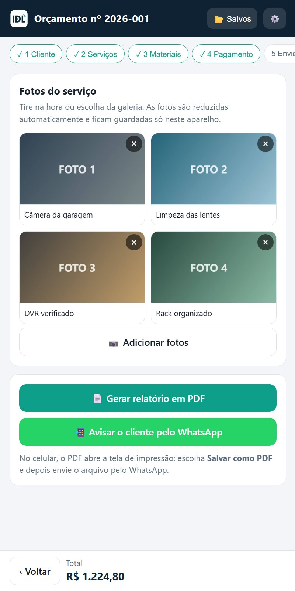

Passo a passo para instalar o app no celular, montar orçamentos, enviar pelo WhatsApp, receber a autorização do cliente e entregar o relatório com fotos.
O app funciona pelo navegador e pode ser instalado como um aplicativo normal, com ícone na tela inicial. Não precisa da Play Store.
Na primeira vez que abrir o app, ele pede para você criar uma senha. Ela protege e criptografa seus orçamentos, clientes e fotos.


Toque na engrenagem ⚙️ no alto da tela. Seus dados já vêm preenchidos:
Complete, se quiser, CNPJ/CPF, e-mail e Instagram. Eles aparecem no orçamento e no rodapé do PDF. Depois toque em Salvar.
Nessa mesma tela ficam os botões 🔒 Trocar senha e 🔑 Novo código.

Cadastre uma vez os serviços e materiais que você mais usa, com os seus preços. Depois, ao montar um orçamento, é só tocar no item que descrição e valor entram sozinhos.
O app já vem com uma lista inicial de serviços sem preço: coloque os seus valores.

O orçamento é feito em etapas, na barra do alto: 1 Cliente → 2 Serviços → 3 Materiais → 4 Pagamento → 5 Enviar. Use Avançar › e ‹ Voltar. O total aparece sempre no rodapé da tela.
1 · Cliente: nome e WhatsApp do cliente são obrigatórios. Contato, CPF/CNPJ, e-mail e endereço são opcionais.
2 · Serviços: toque nos itens de Do meu catálogo para adicionar com descrição e valor prontos, ou use + Adicionar serviço e digite. Cada serviço tem o seu valor: a mão de obra do orçamento é a soma dos serviços, e o cliente vê o preço de cada um.
Você pode mudar o valor de um serviço só naquele orçamento, sem mexer no catálogo.

3 · Materiais: toque num material do catálogo ou adicione um novo. Informe descrição, quantidade, unidade (un, m, cx…) e valor unitário. O subtotal e o total são calculados sozinhos. Use vírgula nos centavos: 189,90.
4 · Pagamento: toque numa condição pronta (ex.: 50% na aprovação e 50% na conclusão, via PIX) ou escreva a sua. Preencha também, se quiser, desconto, validade (padrão 15 dias), prazo de execução, garantia e observações.

Na etapa 5 Enviar a mensagem para o cliente já vem pronta, em tom profissional, com o valor total, a validade e o link do orçamento. Você pode editar o texto à vontade.
Outros botões dessa tela:

O cliente toca no link e vê o orçamento completo, com a logo da IDL. No final há dois botões:
A resposta chega no seu WhatsApp, assim:
O cliente não precisa de senha nem instalar nada. Ele também pode baixar o orçamento em PDF.


Toque em 📂 Salvos no alto da tela para ver todos os orçamentos. Em cada um você pode:
Depois de terminar o serviço, abra o orçamento (em Salvos) e vá até a etapa 6 Relatório.
O orçamento passa a aparecer como 🏁 concluído.

| O cliente precisa instalar alguma coisa? | Não. Ele só toca no link que chega no WhatsApp e o orçamento abre no navegador. |
| Posso mudar um orçamento depois de enviar? | Sim. Abra em Salvos, corrija e envie de novo. O cliente deve usar o link mais novo. |
| O valor total não bateu. O que conferir? | Use vírgula nos centavos (189,90) e confira as quantidades e o valor de cada serviço (a mão de obra é a soma deles). O desconto é subtraído do total. |
| Como mudo a mensagem padrão? | Na etapa 5, edite o texto antes de enviar. O botão ↺ Refazer mensagem padrão volta ao texto original. |
| O PDF não aparece para enviar. | Na tela de impressão, escolha Salvar como PDF (não uma impressora). O arquivo fica em Downloads; no WhatsApp use 📎 → Documento. |
| Esqueci a senha e perdi o código. | Aí não há como abrir os dados antigos. Toque em Esqueci a senha → Perdi o código também: o app apaga tudo e você começa do zero. |
| Troquei de celular. | Instale o app no celular novo (passo 1) e crie uma senha nova. Os orçamentos do aparelho antigo não passam para o novo. |
| O app mostra uma versão antiga. | Feche e abra de novo com internet: ele se atualiza sozinho. |